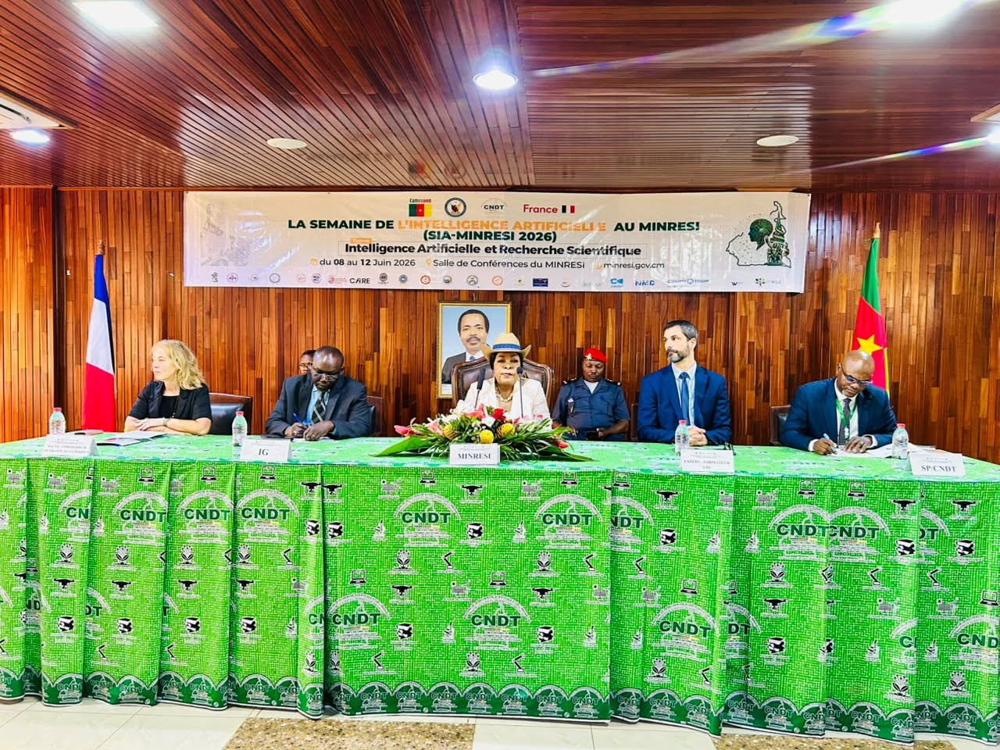
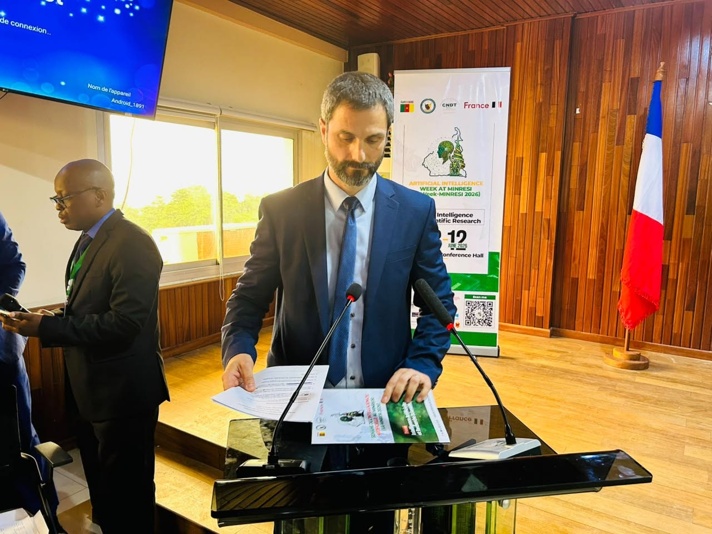
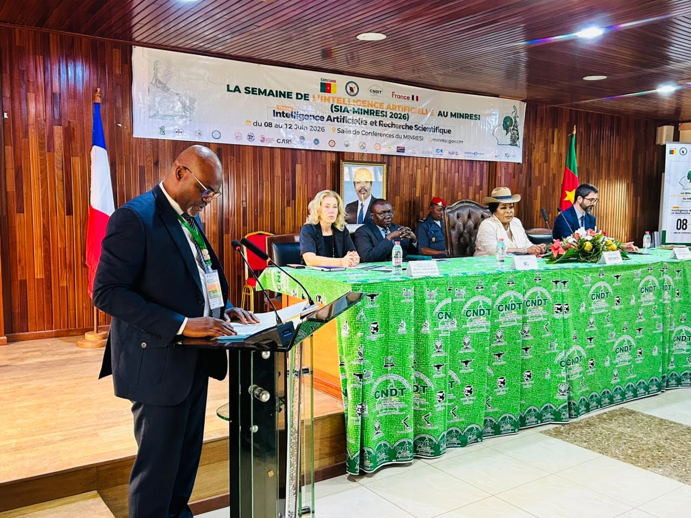
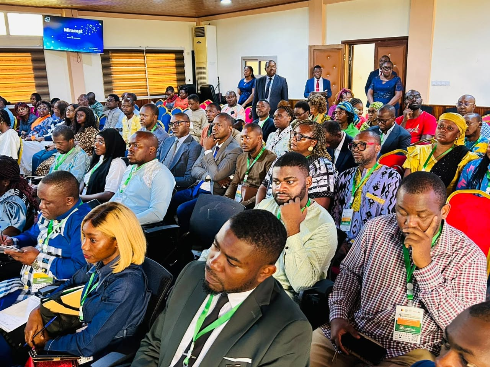
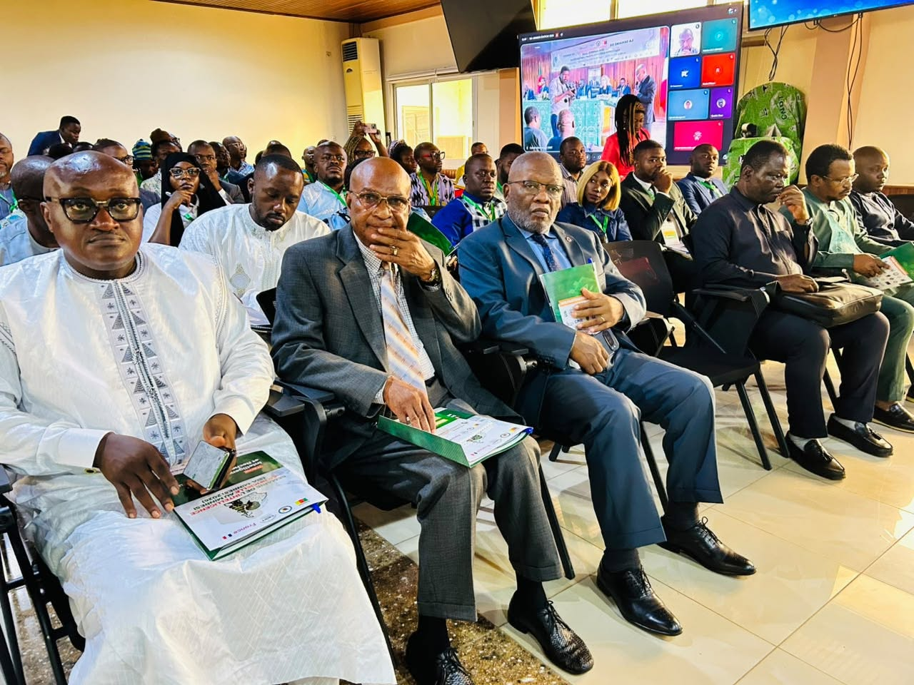
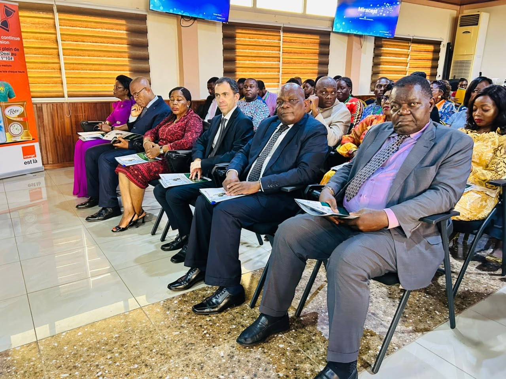
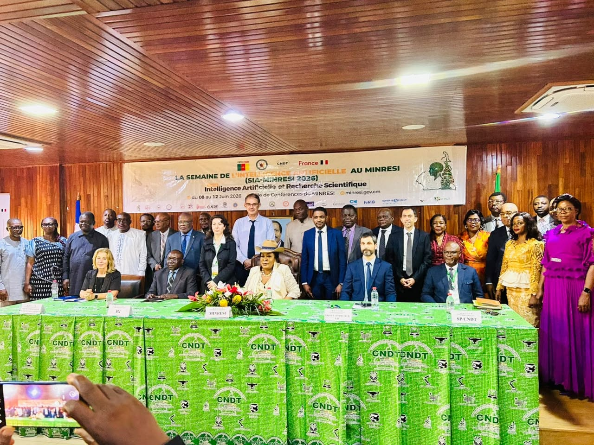

𝐎𝐮𝐯𝐞𝐫𝐭𝐮𝐫𝐞 𝐨𝐟𝐟𝐢𝐜𝐢𝐞𝐥𝐥𝐞 𝐝𝐞 𝐥𝐚 𝐒𝐞𝐦𝐚𝐢𝐧𝐞 𝐝𝐞 𝐥’𝐈𝐧𝐭𝐞𝐥𝐥𝐢𝐠𝐞𝐧𝐜𝐞 𝐀𝐫𝐭𝐢𝐟𝐢𝐜𝐢𝐞𝐥𝐥𝐞 𝐚𝐮 𝐌𝐈𝐍𝐑𝐄𝐒𝐈 (𝐒𝐈𝐀 𝐌𝐈𝐍𝐑𝐄𝐒𝐈) 𝐬𝐨𝐮𝐬 𝐥𝐞 𝐭𝐡𝐞̀𝐦𝐞 : 𝐈𝐧𝐭𝐞𝐥𝐥𝐢𝐠𝐞𝐧𝐜𝐞 𝐀𝐫𝐭𝐢𝐟𝐢𝐜𝐢𝐞𝐥𝐥𝐞 𝐞𝐭 𝐑𝐞𝐜𝐡𝐞𝐫𝐜𝐡𝐞 𝐒𝐜𝐢𝐞𝐧𝐭𝐢𝐟𝐢𝐪𝐮𝐞.
Sous la présidence de 𝐌𝐚𝐝𝐚𝐦𝐞 𝐥𝐞 𝐌𝐢𝐧𝐢𝐬𝐭𝐫𝐞 𝐝𝐞 𝐥𝐚 𝐑𝐞𝐜𝐡𝐞𝐫𝐜𝐡𝐞 𝐒𝐜𝐢𝐞𝐧𝐭𝐢𝐟𝐢𝐪𝐮𝐞 𝐞𝐭 𝐝𝐞 𝐥’𝐈𝐧𝐧𝐨𝐯𝐚𝐭𝐢𝐨𝐧, 𝐃𝐫 𝐌𝐚𝐝𝐞𝐥𝐞𝐢𝐧𝐞 𝐓𝐂𝐇𝐔𝐈𝐍𝐓𝐄, s’est tenue ce mardi 09 juin 2026, dans la salle de conférences du MINRESI, la cérémonie officielle d’ouverture du 𝐒𝐈𝐀-𝐌𝐈𝐍𝐑𝐄𝐒𝐈 𝟐𝟎𝟐𝟔. Cet événement d’envergure est coorganisé par 𝐥’𝐀𝐦𝐛𝐚𝐬𝐬𝐚𝐝𝐞 𝐝𝐞 𝐅𝐫𝐚𝐧𝐜𝐞 𝐚𝐮 𝐂𝐚𝐦𝐞𝐫𝐨𝐮𝐧 d’une part, et d’autre part le 𝐌𝐈𝐍𝐑𝐄𝐒𝐈 par l’entremise du 𝐂𝐨𝐦𝐢𝐭𝐞́ 𝐧𝐚𝐭𝐢𝐨𝐧𝐚𝐥 𝐝𝐞 𝐃𝐞́𝐯𝐞𝐥𝐨𝐩𝐩𝐞𝐦𝐞𝐧𝐭 𝐝𝐞𝐬 𝐓𝐞𝐜𝐡𝐧𝐨𝐥𝐨𝐠𝐢𝐞𝐬 (𝐂𝐍𝐃𝐓), qui bénéficie de l’appui technique de 𝐥’𝐔𝐧𝐢𝐯𝐞𝐫𝐬𝐢𝐭𝐞́ 𝐁𝐨𝐮𝐫𝐠𝐨𝐠𝐧𝐞 𝐄𝐮𝐫𝐨𝐩𝐞 (𝐔𝐁𝐄).
Les experts de l’UBE vont renforcer les capacités des chercheurs et du personnel administratif, 𝐝𝐮 𝟎𝟖 𝐚𝐮 𝟏𝟐 𝐣𝐮𝐢𝐧 𝟐𝟎𝟐𝟔 en présentiel et en ligne, sur l’utilisation de l’IA dans la recherche et l’IA générative. Sont également prévus des conférences thématiques, des ateliers pratiques ainsi qu’une table ronde consacrée aux enjeux et perspectives de la recherche en intelligence artificielle au Cameroun.
À travers cette initiative, le MINRESI réaffirme sa volonté de promouvoir une appropriation responsable, éthique et stratégique de l’intelligence artificielle et de se positionner au cœur des dynamiques de recherche, d’innovation et de développement des technologies émergentes au Cameroun.
𝐒𝐞𝐦𝐚𝐢𝐧𝐞 𝐝𝐞 𝐥’𝐈𝐧𝐭𝐞𝐥𝐥𝐢𝐠𝐞𝐧𝐜𝐞 𝐀𝐫𝐭𝐢𝐟𝐢𝐜𝐢𝐞𝐥𝐥𝐞 𝐚𝐮 𝐌𝐈𝐍𝐑𝐄𝐒𝐈 (𝐒𝐈𝐀 𝐌𝐈𝐍𝐑𝐄𝐒𝐈 𝟐𝟎𝟐𝟔) | 𝐉𝐨𝐮𝐫 𝟐 : 𝐅𝐨𝐫𝐦𝐚𝐭𝐢𝐨𝐧 𝐬𝐮𝐫 𝐥’𝐈𝐀 𝐝𝐚𝐧𝐬 𝐥𝐚 𝐑𝐞𝐜𝐡𝐞𝐫𝐜𝐡𝐞
Cette semaine intense a débuté par trois (03) modules et un (01) atelier pratique sur le thème global de l’IA dans la recherche, des pratiques informationnelles et de production. Les participants, essentiellement des chercheurs issus des instituts de recherche et des universités, ont été capacités par les experts de l’Université Bourgogne Europe en ligne et en présentiel, à savoir Dr Nabil Ben-Abdallah, Dr Sarah Ratotoary et Dr Abdou Wahabou.
𝗦𝗲𝗺𝗮𝗶𝗻𝗲 𝗱𝗲 𝗹’𝗜𝗻𝘁𝗲𝗹𝗹𝗶𝗴𝗲𝗻𝗰𝗲 𝗔𝗿𝘁𝗶𝗳𝗶𝗰𝗶𝗲𝗹𝗹𝗲 𝗮𝘂 𝗠𝗜𝗡𝗥𝗘𝗦𝗜 (𝗦𝗜𝗔 𝗠𝗜𝗡𝗥𝗘𝗦𝗜 𝟮𝟬𝟮𝟲) | 𝗝𝗼𝘂𝗿 𝟯 : 𝗦𝗲𝗻𝘀𝗶𝗯𝗶𝗹𝗶𝘀𝗮𝘁𝗶𝗼𝗻 𝗮̀ 𝗹’𝗜𝗔 𝗴𝗲́𝗻𝗲́𝗿𝗮𝘁𝗶𝘃𝗲, 𝗰𝗼𝗻𝗳𝗲́𝗿𝗲𝗻𝗰𝗲 𝘁𝗵𝗲́𝗺𝗮𝘁𝗶𝗾𝘂𝗲 𝗲𝘁 𝗮𝘁𝗲𝗹𝗶𝗲𝗿 𝘀𝘂𝗿 𝗹𝗲𝘀 𝗜𝗔 𝗳𝗿𝘂𝗴𝗮𝗹𝗲𝘀.
La troisième journée du SIA MINRESI 2026 était riche en activités. Les travaux ont été ouverts par le Secrétaire Permanent du CNDT, Dr ELE ABIAMA Patrice.
La journée s'est poursuivie avec une conférence sur le thème : "𝑇𝐴𝐿𝑁 𝑒𝑡 𝐼𝐴 𝐺𝑒́𝑛𝑒́𝑟𝑎𝑡𝑖𝑣𝑒, 𝑝𝑎𝑠𝑠𝑒́, 𝑝𝑟𝑒́𝑠𝑒𝑛𝑡, 𝑓𝑢𝑡𝑢𝑟" animée par Pr Christophe CRUZ de l’Université Bourgogne Europe, et modéré par Dr Cédric Mayrargue, Conseiller Technique recherche et Innovation au MINRESI.
𝗦𝗲𝗺𝗮𝗶𝗻𝗲 𝗱𝗲 𝗹’𝗜𝗻𝘁𝗲𝗹𝗹𝗶𝗴𝗲𝗻𝗰𝗲 𝗔𝗿𝘁𝗶𝗳𝗶𝗰𝗶𝗲𝗹𝗹𝗲 𝗮𝘂 𝗠𝗜𝗡𝗥𝗘𝗦𝗜 (𝗦𝗜𝗔 𝗠𝗜𝗡𝗥𝗘𝗦𝗜 𝟮𝟬𝟮𝟲) | 𝗝𝗼𝘂𝗿 𝟯 : 𝗦𝗲𝗻𝘀𝗶𝗯𝗶𝗹𝗶𝘀𝗮𝘁𝗶𝗼𝗻 𝗮̀ 𝗹’𝗜𝗔 𝗴𝗲́𝗻𝗲́𝗿𝗮𝘁𝗶𝘃𝗲, 𝗰𝗼𝗻𝗳𝗲́𝗿𝗲𝗻𝗰𝗲 𝘁𝗵𝗲́𝗺𝗮𝘁𝗶𝗾𝘂𝗲 𝗲𝘁 𝗮𝘁𝗲𝗹𝗶𝗲𝗿 𝘀𝘂𝗿 𝗹𝗲𝘀 𝗜𝗔 𝗳𝗿𝘂𝗴𝗮𝗹𝗲𝘀.
Sensibilisation à l’IA générative, Partie 1. Des responsables administratifs du MINRESI et des instituts de recherche ont été édifiés sur le sujet par Mme Magali SABIO, responsable du projet CAIRE (Citizen-oriented Artificial Intelligence training for a Responsible Education), dans la salle de réunions du CNDT.
𝗦𝗲𝗺𝗮𝗶𝗻𝗲 𝗱𝗲 𝗹’𝗜𝗻𝘁𝗲𝗹𝗹𝗶𝗴𝗲𝗻𝗰𝗲 𝗔𝗿𝘁𝗶𝗳𝗶𝗰𝗶𝗲𝗹𝗹𝗲 𝗮𝘂 𝗠𝗜𝗡𝗥𝗘𝗦𝗜 (𝗦𝗜𝗔 𝗠𝗜𝗡𝗥𝗘𝗦𝗜 𝟮𝟬𝟮𝟲) | 𝗝𝗼𝘂𝗿 𝟯 : 𝗦𝗲𝗻𝘀𝗶𝗯𝗶𝗹𝗶𝘀𝗮𝘁𝗶𝗼𝗻 𝗮̀ 𝗹’𝗜𝗔 𝗴𝗲́𝗻𝗲́𝗿𝗮𝘁𝗶𝘃𝗲, 𝗰𝗼𝗻𝗳𝗲́𝗿𝗲𝗻𝗰𝗲 𝘁𝗵𝗲́𝗺𝗮𝘁𝗶𝗾𝘂𝗲 𝗲𝘁 𝗮𝘁𝗲𝗹𝗶𝗲𝗿 𝘀𝘂𝗿 𝗹𝗲𝘀 𝗜𝗔 𝗳𝗿𝘂𝗴𝗮𝗹𝗲𝘀
Dans l’après-midi, un atelier technique portant sur un Partage d’expérience sur l’utilisation d’IA locales et frugales a suscité un vif intérêt des participants. Les travaux étaient conduits en ligne par Dr Sylvain RAMPACEK, du Laboratoire d’Informatique de l’Université Bourgogne Europe. Dr Abdou Wahabou de l’École polytechnique de Dijon en assurait la modération.
𝗦𝗲𝗺𝗮𝗶𝗻𝗲 𝗱𝗲 𝗹’𝗜𝗻𝘁𝗲𝗹𝗹𝗶𝗴𝗲𝗻𝗰𝗲 𝗔𝗿𝘁𝗶𝗳𝗶𝗰𝗶𝗲𝗹𝗹𝗲 𝗮𝘂 𝗠𝗜𝗡𝗥𝗘𝗦𝗜 (𝗦𝗜𝗔 𝗠𝗜𝗡𝗥𝗘𝗦𝗜 𝟮𝟬𝟮𝟲) | 𝗝𝗼𝘂𝗿 𝟰 : 𝗖𝗼𝗻𝗳𝗲́𝗿𝗲𝗻𝗰𝗲 𝘀𝘂𝗿 𝗹𝗲𝘀 𝗮𝗽𝗽𝗹𝗶𝗰𝗮𝘁𝗶𝗼𝗻𝘀 𝗱𝗲 𝗹’𝗜𝗔 𝗲𝗻 𝘀𝗮𝗻𝘁𝗲́, 𝗲𝘁 𝗦𝗲𝗻𝘀𝗶𝗯𝗶𝗹𝗶𝘀𝗮𝘁𝗶𝗼𝗻 𝗮̀ 𝗹’𝗜𝗔 𝗴𝗲́𝗻𝗲́𝗿𝗮𝘁𝗶𝘃𝗲
Sensibilisation à l’IA générative, Partie 2. Des responsables administratifs du MINRESI et des instituts de recherche ont poursuivi les travaux de la journée précédente, menés par Mme Magali SABIO, responsable du projet CAIRE ((Citizen-oriented Artificial Intelligence training for a Responsible Education).
𝗦𝗲𝗺𝗮𝗶𝗻𝗲 𝗱𝗲 𝗹’𝗜𝗻𝘁𝗲𝗹𝗹𝗶𝗴𝗲𝗻𝗰𝗲 𝗔𝗿𝘁𝗶𝗳𝗶𝗰𝗶𝗲𝗹𝗹𝗲 𝗮𝘂 𝗠𝗜𝗡𝗥𝗘𝗦𝗜 (𝗦𝗜𝗔 𝗠𝗜𝗡𝗥𝗘𝗦𝗜 𝟮𝟬𝟮𝟲) | 𝗝𝗼𝘂𝗿 𝟰 : 𝗖𝗼𝗻𝗳𝗲́𝗿𝗲𝗻𝗰𝗲 𝘀𝘂𝗿 𝗹𝗲𝘀 𝗮𝗽𝗽𝗹𝗶𝗰𝗮𝘁𝗶𝗼𝗻𝘀 𝗱𝗲 𝗹’𝗜𝗔 𝗲𝗻 𝘀𝗮𝗻𝘁𝗲́, 𝗲𝘁 𝗦𝗲𝗻𝘀𝗶𝗯𝗶𝗹𝗶𝘀𝗮𝘁𝗶𝗼𝗻 𝗮̀ 𝗹’𝗜𝗔 𝗴𝗲́𝗻𝗲́𝗿𝗮𝘁𝗶𝘃𝗲
Ce jeudi 11 juin 2026, une conférence sur les applications de l’IA en santé s'est tenue dans la salle de réunions du MINRESI. Trois panelistes en ligne de l’Université Bourgogne Europe, Pr Fabrice MERIAUDEAU, Pr Yannick BENEZETH et Pr Christophe NICOLLE, ont partagé leurs expériences et les travaux menés au sein de leurs laboratoires respectifs. La partie camerounaise, représentée par l’Institut de Recherche Médicale et d’Étude de Plantes Médicinales (IMPM), du Centre Pasteur du Cameroun et du Ministère de la Santé Publique (MINSANTE), ont donné un aperçu des réalités locales sur le sujet. Des pistes de collaborations futures ont été évoqués. Les échanges étaient co-modérés par Dr Cédric Mayrargue, Conseiller Technique Recherche et Innovation du MINRESI, DR TSUANYO David, Coordonnateur Adjoint de la Recherche au CNDT.
🎉 Semaine de l'Intelligence Artificielle au MINRESI – Jour 5 | Table ronde finale et cérémonie de clôture
Ce 12 juin 2026, la SIA-MINRESI 2026 s'est achevée sur une note de synthèse, avec une table ronde autour du thème : « IA et recherche scientifique : enjeux et perspectives au Cameroun »
Organisée en deux panels, cette dernière activité a réuni l'ensemble des experts intervenus tout au long de la semaine, des représentants des ministères sectoriels, et des invités spéciaux.
La cérémonie de clôture a été présidée par le Dr Ele Abiama Patrice, Secrétaire Permanent du CNDT, représentant Madame le Ministre de la Recherche Scientifique et de l'Innovation.
Une semaine riche en échanges, en expertise et en perspectives pour l'avenir de l'IA au service de la recherche scientifique camerounaise.
Galerie







Rapports & documents
Retrouvez ci-dessous les documents officiels produits dans le cadre du projet.
-
RapportTélécharger
Définition des périmètres, indicateurs et sources du projet.